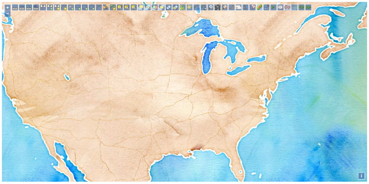

ol3-turf


The ol3-turf library is a Turf toolbar for OpenLayers 3. The toolbar is a OpenLayers 3 custom control that provides access to Turf commands. For commands that require user inputs (e.g., point grid) a popup form is displayed. The Turf command output is either added to the map (e.g., a feature) or displayed as a popup message (e.g., polygon area). The toolbar is customizable in the commands displayed and its styling.

DOCUMENTATION
The following help is available at the ol3-turf website:
BUILD
The only requirement for building ol3-turf is node.js.
The following instructions assume that grunt-cli has been installed globally:
npm install -g grunt-cli
To build the library clone it, install it, then grunt it
git clone https://github.com/dpmcmlxxvi/ol3-turf.git
npm install
grunt
TEST
To run the unit tests
grunt test
Then open the coverage report in the coverage directory in a browser.
USAGE
The ol3-turf library consists of two files
- ol3-turf.js
- ol3-turf.css
and their minified versions. The main class exposed is ol.control.Turf which is a OpenLayers 3 custom control that extends the ol.control.Control class. The simplest use case is to create the control and add it to an existing ol.Map. This will add all available Turf commands to the toolbar and use the default styling.
const toolbar = new ol.control.Turf();
const map = new ol.Map({...});
map.addControl(toolbar);
The toolbar constructor takes an optional options argument which extends the
ol.control.Control
options object. See the
ol.control.Turf
documentation for details. The options allow modifying the toolbar's defaut
behavior by controlling which Turf controls are displayed, providing a custom
callback function to handle the processing of the Turf outputs, and providing a
custom style sheet class for the toolbar. In addition, the various ol3-turf-*
style sheet classes for the toolbar, controls, forms, and popups can be
overridden to suit an application's look and feel.
LICENSE
Copyright (c) 2016 Daniel Pulido mailto:dpmcmlxxvi@gmail.com
Source code is released under the MIT License. Documentation is released under the CC BY 4.0. Icons are from OSGeo and released under the CC BY 3.0.